Visualization for Electronic and Structural Analysis (VESTA) is an open source software to generate crystal structures.You can download the software here.
You can learn to create crystal structures of Simple cubic, Face centered cubic(FCC), FCC (111) surface here.
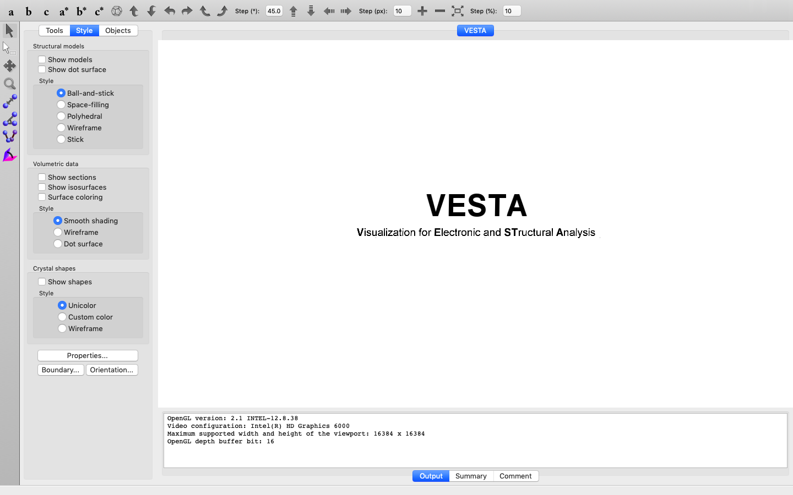
Simple Cubic α-Po
Let’s construct a simple cubic unit cell with lattice parameters:
a=b=c=1.68 Å; α=β=γ=90°
Atomic position:
(0, 0, 0)
STEP 1: Go to File → New Structure. You should be able to see the below window.
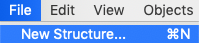
STEP 2: In Phase you can give your structure name. It is not mandatory.
STEP 3: In Unit cell, enter the lattice parameters: a=b=c=1.68 Å; α=β=γ=90°
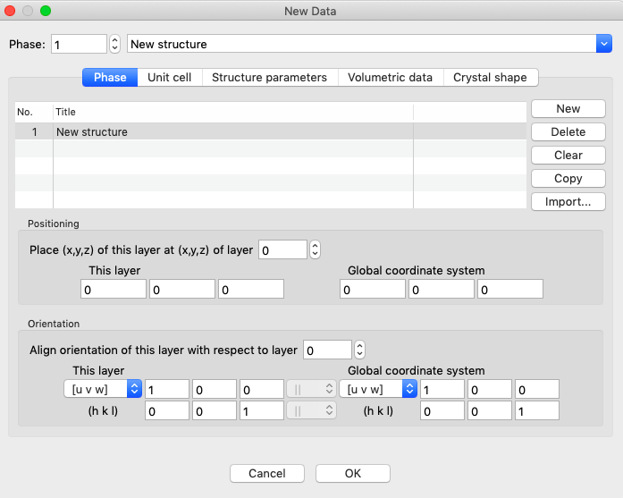
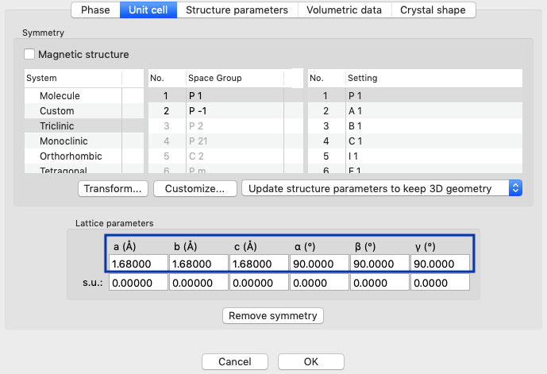
STEP 4: In Structure Parameters, click on New, (x,y,z) = (0,0,0) will be selected by default
and the co-ordinates of Simple Cubic is (0,0,0).
So you don’t need to change anything. Now click on Symbol, select Po.
In label, you are free to input any text. I am entering Po.
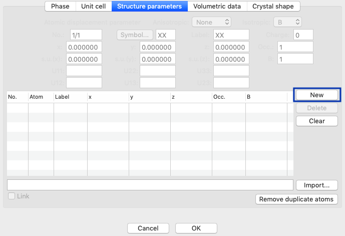
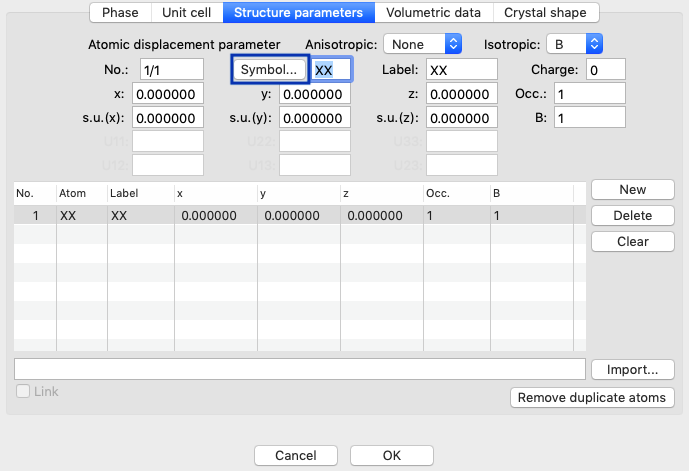
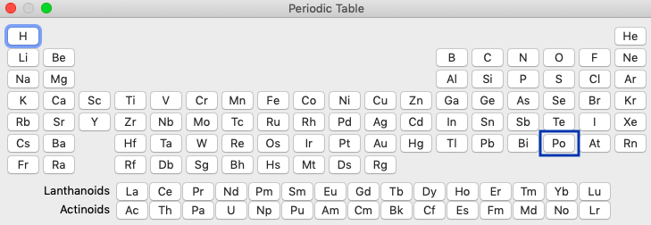
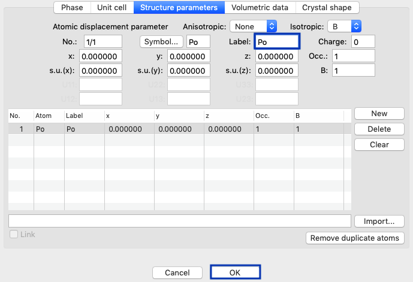
STEP 5: Saving the image. Go to File → Save as, select your destination folder. The image will be saved with .vesta extension.
You would be able to open this file in VESTA again.
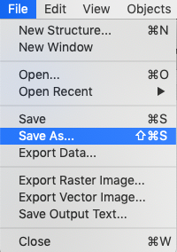
STEP 6: Exporting the image. Go to File → Export Raster Image. You will see different file formats like .jpg, .png, etc.
Export in the format you need. To export high resolution imgs, increase the scale to 2 or higher.
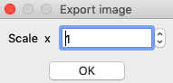
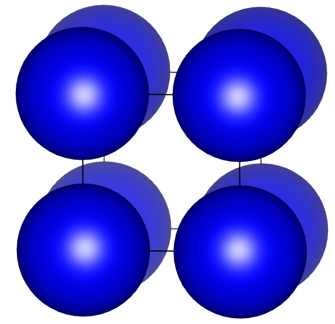
Face Centered Cubic (FCC) - Aluminium
Let’s construct a FCC Aluminium unit cell with lattice parameters:
a=b=c=4 Å; α=β=γ=90°
Atomic positions:
(0, 0, 0)
(0, 0.5, 0.5)
(0.5, 0, 0.5)
(0.5, 0.5, 0)
STEP 1: File → New Structure.
STEP 2: In Phase you can give your structure name. It is not mandatory.
STEP 3: In Unit cell, enter lattice parameters a=b=c=4 Å; α=β=γ=90°.
STEP 4: In Structure Parameters, click on New, (x,y,z) = (0,0,0) will be selected by default
Now click on Symbol, select Al from the periodic table
Again click on New, enter second atomic position (0, 0.5, 0.5)
Similarly enter third and fourth atomic positions (0.5, 0, 0.5) and (0.5, 0.5, 0) one after the other

STEP 5: Save your file in .vesta format
STEP 6: Export your image

FCC (111) surface
To create FCC supercell along (111) plane, enter the below values in the transformation matrix vertically,
a1=[-0.5 0.5 0], b1=[-0.5 -0.5 1], c1=[1 1 1]
Now the new directions are will be a=[1 1 0], b=[1 1 2] and c=[1 1 1]